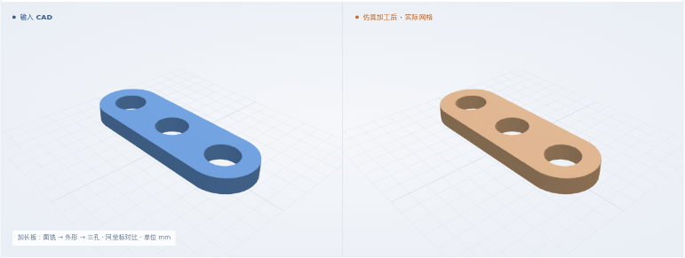
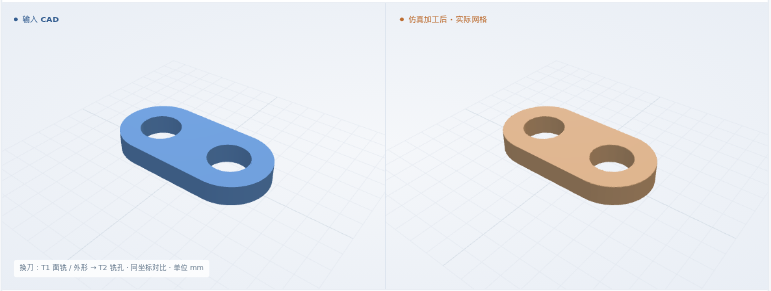

基准：面铣 → 外形 → 两孔
8 × 4 × 1.5 mm 矩形坯 · 成品厚 1 mm · φ2 铣孔
软件几何检查通过最终体积 IoU99.3114%
工序：面铣 → 外形 → 铣孔 H1 → 铣孔 H2
1 行草案展开为 4 个动作； 13 项最终几何检查、3 个中间材料状态通过预设软件判据。
全部结果均为软件仿真，未做真实切削。真实工艺卡整卡通过 0 份。工艺卡和判据多为开发方编写，未经工艺师傅批准。开发进度 →
新增自研准备代码：带来源的一行工步，展开为面铣、外形和铣孔；沿用已有 CAM 操作与仿真引擎。
4 份合成纸卡、人工草案和动作映射，已实际生成 NC 并仿真。 本次从结构化草案开始；纸卡与草案同源编写，未运行 Agent 自动转录。真实生产卡仍因来源冲突等缺项阻断。
8 × 4 × 1.5 mm 矩形坯 · 成品厚 1 mm · φ2 铣孔
软件几何检查通过工序：面铣 → 外形 → 铣孔 H1 → 铣孔 H2
1 行草案展开为 4 个动作； 13 项最终几何检查、3 个中间材料状态通过预设软件判据。
12 × 4 × 1.5 mm 矩形坯 · 成品厚 1 mm · φ2 铣孔
软件几何检查通过工序：面铣 → 外形 → 铣孔 H1 → 铣孔 H2 → 铣孔 H3
1 行草案展开为 5 个动作； 16 项最终几何检查、4 个中间材料状态通过预设软件判据。

8 × 4 × 1.5 mm 矩形坯 · 成品厚 1 mm · φ2 铣孔
软件几何检查通过工序：面铣 → 外形 → 铣孔 H1 → 铣孔 H2
1 行草案展开为 4 个动作； 13 项最终几何检查、3 个中间材料状态通过预设软件判据。

8 × 4 × 1.5 mm 矩形坯 · 成品厚 1 mm · φ2 铣孔
软件几何检查通过工序：面铣 → 铣孔 H2 → 铣孔 H1 → 外形
1 行草案展开为 4 个动作； 13 项最终几何检查、3 个中间材料状态通过预设软件判据。
可查看上方静态图或下载形状。
回放逐个显示实际工步结束后的剩料；不是连续刀具运动或加工计时。中间帧执行累计 NC 前缀，最终结果执行完整 NC。
三个模块如何接起来
核对草案与来源、CAD、毛坯和刀具，保留顺序及依赖；将一行展开为多个动作。映射与参数事先给定，未自动规划。
重新读取原始 CAD；调用已有 MillFace、Profile、Helix。检查刀具、顺序、坐标及深度；本轮没有修改 FreeCAD 算法。
完整原坯执行 NC；比较最终 CAD，并检查各工步累计剩料。复用已修补的 CAMotics，本轮没有修改去料引擎。